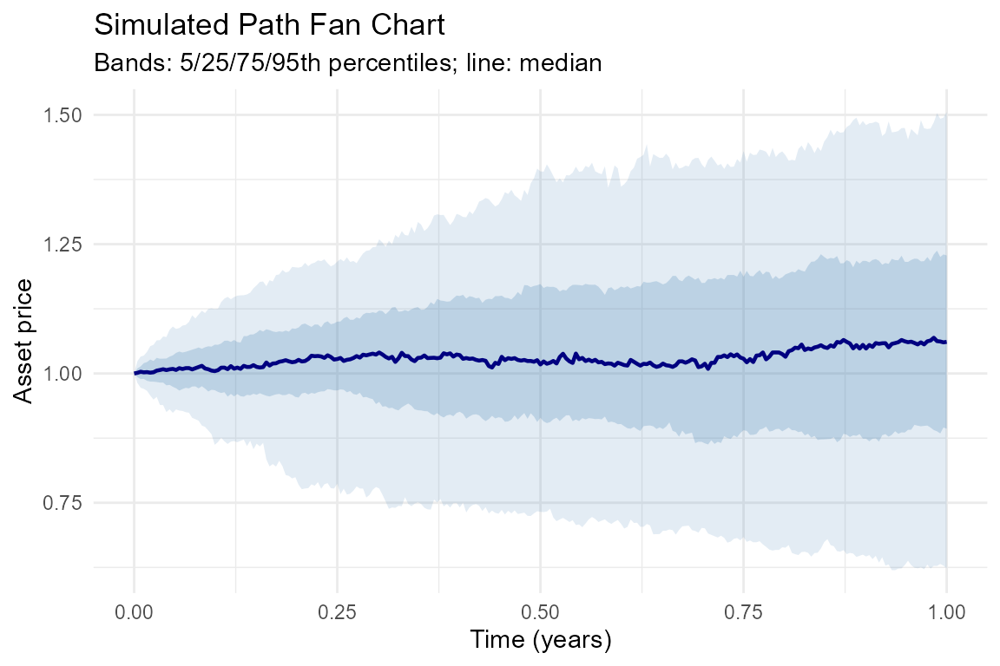
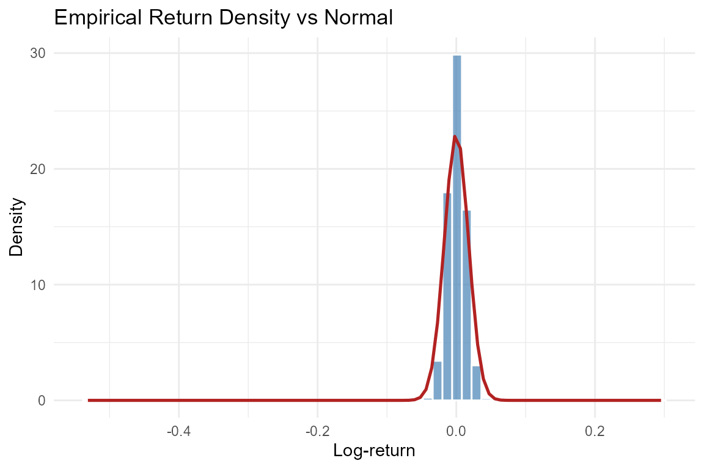

vignettes/JumpDiffSim-intro.Rmd
JumpDiffSim-intro.RmdStandard Geometric Brownian Motion (GBM) assumes that log-returns are normally distributed. Empirical equity and cryptocurrency returns, however, exhibit well-documented departures from normality:
The Merton (1976) jump-diffusion model adds a compound Poisson process to GBM, allowing the price to jump discontinuously at random times:
where , , and .
JumpDiffSim provides a clean, unified S4 interface for simulating paths and calibrating parameters under this model, with all examples running entirely offline.
library(JumpDiffSim)
# Create a MertonModel S4 object with default parameters
m <- MertonModel(
mu = 0.05, # drift
sigma = 0.20, # diffusion volatility
lambda = 1, # average jumps per year
mu_j = -0.10, # mean log-jump size
sigma_j = 0.15 # std dev of log-jumps
)
# Display the model
show(m)
#> Merton Jump-Diffusion Model
#> ---------------------------
#> mu : 0.0500
#> sigma : 0.2000
#> lambda : 1.0000
#> mu_j : -0.1000
#> sigma_j : 0.1500
#> Persist : 0.2500 [alpha+beta not applicable to raw model]
# Simulate 200 paths over 1 year with 252 daily steps
sim <- simulateMerton(m, n = 200, T_ = 1, steps = 252, seed = 42)
# Diagnostic plots
plts <- diagnosticPlots(sim)
print(plts$fan_chart)
print(plts$density)
The fan chart shows the 5th, 25th, 50th, 75th, and 95th percentile bands of the 200 simulated paths. The density plot overlays the empirical return histogram against a Normal curve, illustrating the heavy-tailed character of Merton returns.
# Generate reproducible synthetic log-returns
# (all examples use jdSampleData() -- no internet required)
ret <- jdSampleData("merton", n = 500, seed = 42)
# Fit the Merton model via Maximum Likelihood Estimation
fit <- fitMerton(ret, verbose = FALSE)
# Parameter estimates and convergence
print(fit)
#> Merton MLE Fit Result
#> ---------------------
#> Converged : TRUE
#> Log-lik : 1464.8117
#> Estimates (SE):
#> mu : 0.0889 ( NaN)
#> sigma : 0.2022 ( NaN)
#> lambda : 0.5040 ( NaN)
#> mu_j : 0.0801 ( NaN)
#> sigma_j : 0.0000 ( NaN)
# 95% Wald confidence intervals
confint(fit)
#> 2.5 % 97.5 %
#> mu NaN NaN
#> sigma NaN NaN
#> lambda NaN NaN
#> mu_j NaN NaN
#> sigma_j NaN NaNThe fitMerton() function uses L-BFGS-B optimisation and
computes Hessian-based standard errors via
numDeriv::hessian(). The converged slot
confirms whether the optimiser reached a solution.
| Parameter | Meaning |
|---|---|
| mu | Drift (expected continuous return) |
| sigma | Diffusion volatility |
| lambda | Average jumps per year |
| mu_j | Average log-size of each jump |
| sigma_j | Std deviation of jump sizes |
A negative mu_j combined with a
positive lambda implies that jumps on average reduce the
asset price — consistent with the crash-risk interpretation of Merton
(1976).
# Theoretical mean, variance, skewness, and excess kurtosis
# contributed by the jump component
jumpMoments(m)
#> mean variance skewness kurtosis
#> 0.0300000 0.0725000 -0.3970038 0.5648038Excess kurtosis greater than zero confirms that the Merton model generates heavier tails than GBM, which is the key motivation for using a jump-diffusion specification.